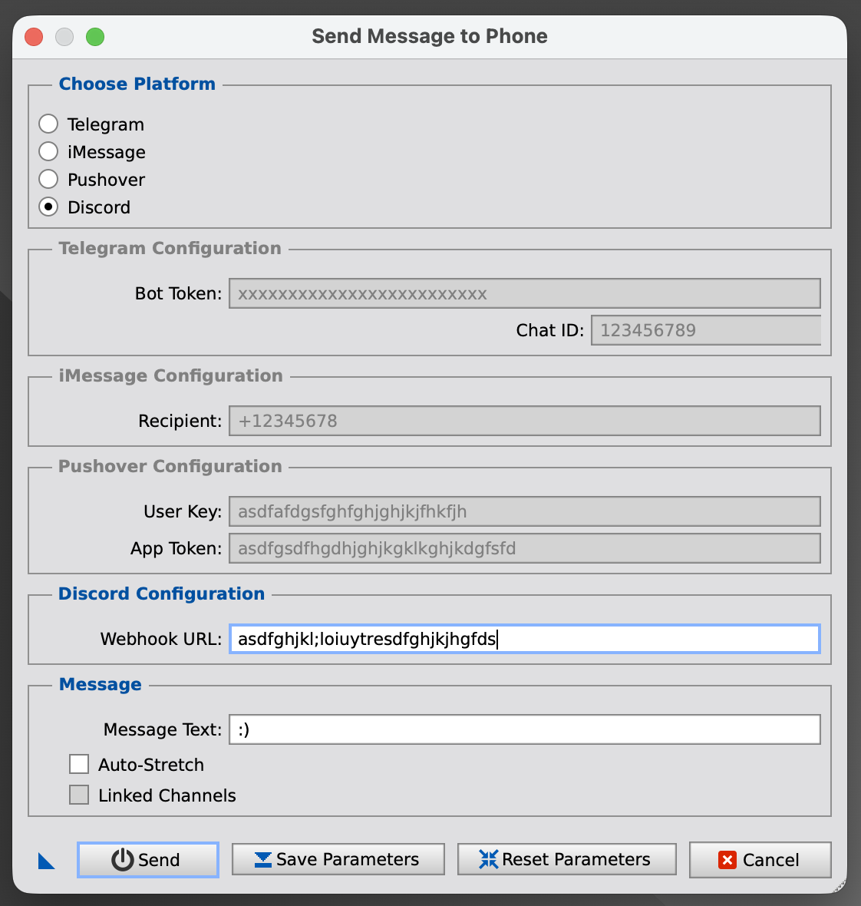

A PixInsight script that sends notifications and images directly to your phone or Discord via Telegram, Discord, iMessage, or Pushover. [more]
Keywords: Telegram, Discord, iMessage, Pushover, Notifications, Image, PixInsight, SendMessageToPhone, Setup, Configuration, Messaging, Webhook
[hide]
[hide]
The SendMessageToPhone script allows users to send images and notifications directly via Telegram, Discord, iMessage (Mac only), or Pushover. This script also serves as the central configurator of things like the NotificationEventScript.
This document will guide you through the process of setting up the SendMessageToPhone script and using it to send notifications.
[hide]
In order to use the SendMessageToPhone script, you need to configure it to send messages and images via your preferred messaging platform: Telegram, Discord, iMessage, or Pushover. Follow the detailed steps below to set it up.
Step 1: Open the SendMessageToPhone script in PixInsight's Script Menu.
Step 2: Select the messaging platform you would like to use:
Step 3: Configure the fields for your selected platform. See the dedicated setup section for your chosen method below.
Step 4: Run the script
The script will be run on the active image window. If there is no active window, no image will be sent.
[hide]
Telegram delivery requires a bot token and a chat ID.

[hide]
If you want to use the Discord option in SendMessageToPhone, you first need to create a webhook inside the Discord server and channel where you want the notifications to appear.
What the script needs
Discord describes webhooks as a simple way to post automated messages from other apps and websites into a text channel. When you create one, Discord generates a Webhook URL. That is the value you paste into the Webhook URL field of this script.
Required permission
To create or manage a webhook for a channel, your account needs Discord's Manage Webhooks permission for that channel. If you do not see the webhook creation options, this permission is the first thing to verify with your server admin.
Create the webhook
Managing an existing webhook
Discord's Integrations page also lets you review existing webhooks, see which channel each one posts to, edit the webhook's name, avatar, or destination channel, copy its URL again, or delete it when you no longer need it.
Important notes
[hide]
iMessage setup is the simplest, but it is only available on macOS.
[hide]
Pushover requires two values: your account's user key and an application token.
[hide]
In addition to running it on the active image window, you may also save (any number of) instances as process icons. They may have different parameters. The process icon can be dragged onto any image and the image will be sent out according to the parameters selected.
[hide]
The script has a few limitations:
[hide]
If you face any issues with the notifications, here are some common fixes:
No notifications received?
Discord messages not appearing
Image not received via Pushover
Error: "No valid target image found"
Copyright © (c) 2025 Luca Bartek